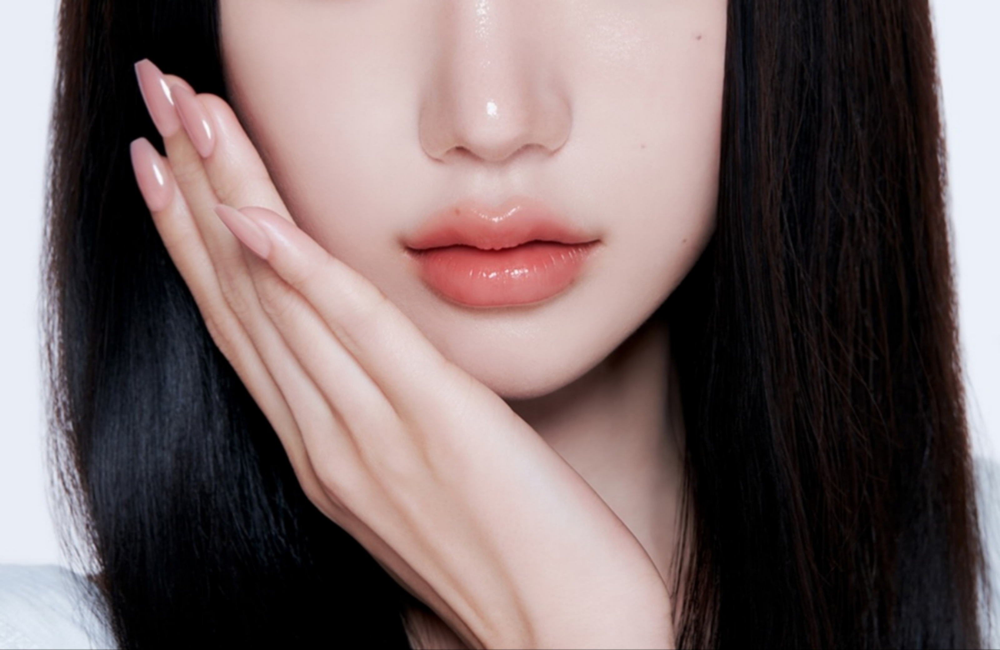
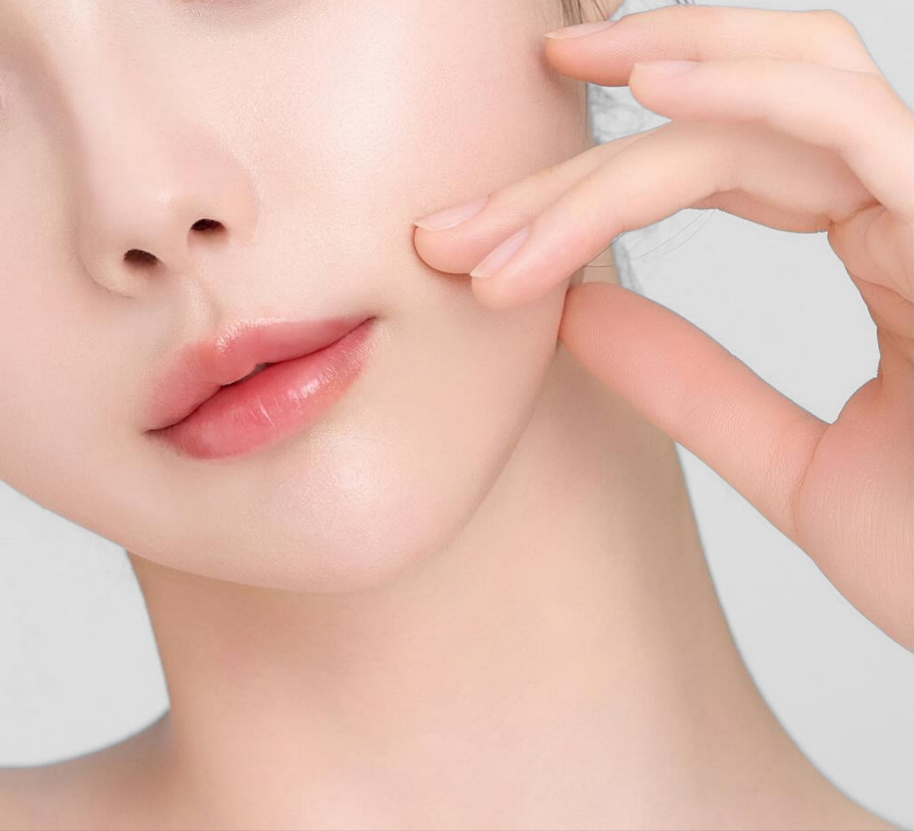
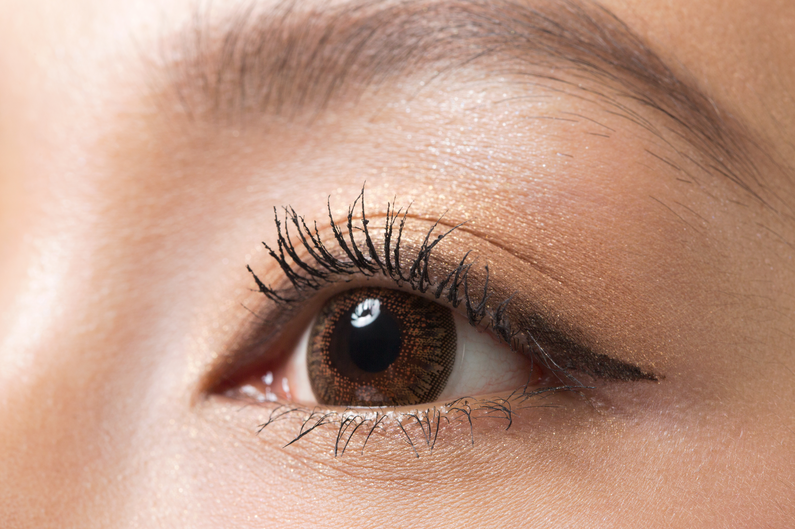
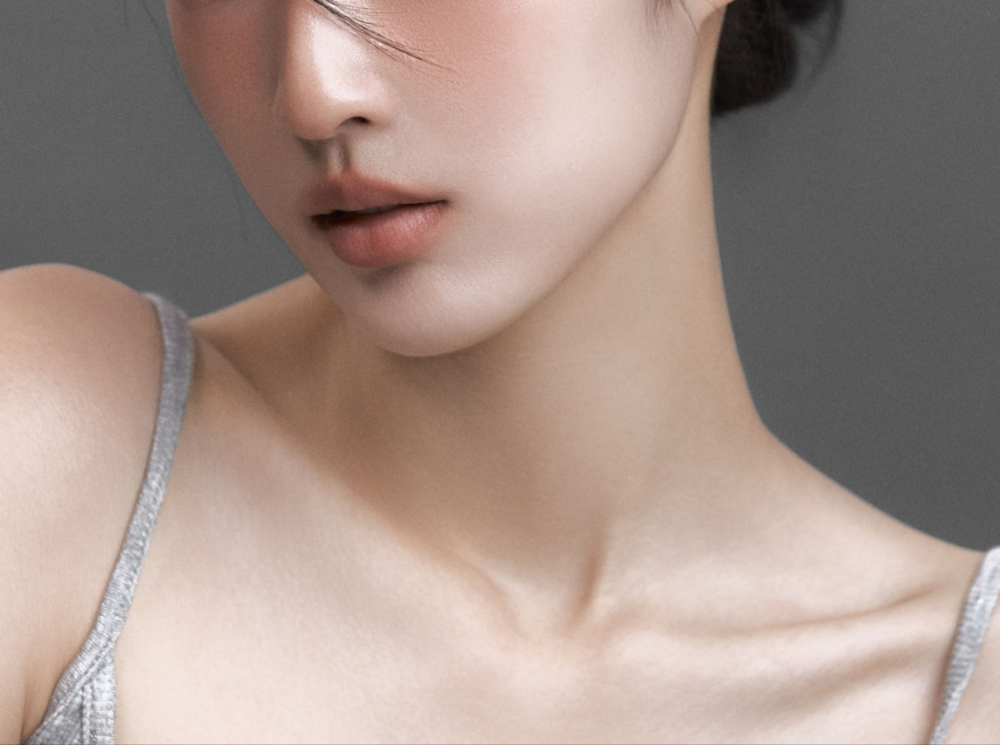

안면 지방이식으로 꺼진 볼륨을 회복하고, 지방흡입으로 불필요한 라인을 정리합니다.
이식과 흡입 모두 세밀한 양 조절이 결과를 좌우합니다.
지방은 빼는 양보다 어디서 어떻게 빼느냐가 결과를 결정합니다.
노화는 얼굴에서 지방이 빠지는 과정이기도 합니다. 꺼진 볼, 움푹 들어간 관자놀이, 얇아진 눈 아래는 지방이식으로 자연스럽게 채울 수 있습니다. 자신의 지방을 사용하므로 이물감 없이 자연스러운 결과를 냅니다.
지방흡입은 다이어트로 빠지지 않는 부위의 지방을 정밀하게 제거하는 방법입니다. 단, 체중 감량 방법이 아닌 체형 교정 방법임을 이해하고 목표를 현실적으로 설정하는 것이 중요합니다.
지방이식은 '얼마나'보다 '어디에, 어떤 깊이로'가 중요합니다. 피부층, 근막층, 골막층을 나누어 섬세하게 이식해 자연스럽고 오래 유지되는 결과를 만듭니다.
전신마취가 필요한 체형 지방흡입도 전담 마취과 전문의와 종합병원 응급 체계 안에서 안전하게 진행됩니다. 수술 전 혈액검사, 심전도 검사 등 건강 확인이 원내에서 가능합니다.
지방흡입이 체중 감량 수단이 아님을 솔직하게 안내합니다. 현재 체형과 피부 탄력 상태를 기준으로 기대할 수 있는 변화 범위를 정직하게 설명합니다.
자신의 복부나 허벅지에서 채취한 지방을 정제하여 꺼진 볼, 눈 아래, 관자놀이 등에 이식합니다. 노화로 줄어든 볼륨을 자연스럽게 회복합니다.

과도하게 발달한 볼 지방이나 이중턱 지방을 소량 흡입하여 얼굴 라인을 정돈합니다. 절개 없이 작은 관으로 진행하며 회복이 빠릅니다.
복부, 허벅지, 팔뚝, 옆구리 등 운동으로 빠지지 않는 부위의 지방을 흡입하여 체형 라인을 교정합니다. 피부 탄력 유지를 고려한 흡입량 조절이 핵심입니다.

지방을 매우 미세하게 분리하여 피부 진피층에 이식하는 방법입니다. 눈 아래 잔주름, 입술 주변, 목주름 등 섬세한 부위에 볼륨과 피부 재생 효과를 동시에 줍니다.

눈밑 불룩한 지방을 제거하지 않고 꺼진 눈 아래 골(눈물고랑)로 이동시키는 방법입니다. 제거보다 재배치가 더 자연스러운 결과를 낼 수 있습니다.

얼굴에서 과한 부위(볼 지방)를 흡입하고, 부족한 부위(관자놀이, 눈밑)에 이식하는 동시 교정 방법입니다. 한 번의 수술로 얼굴 전체 비율을 재설계합니다.
빼는 곳과 채우는 곳, 기대할 수 있는 결과 범위를 정직하게 안내드립니다.